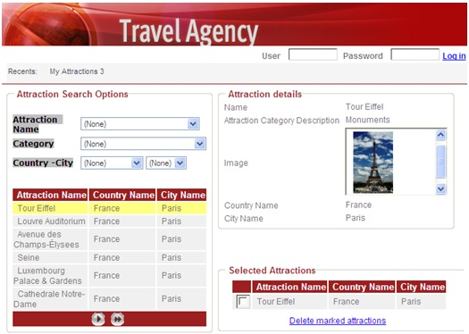
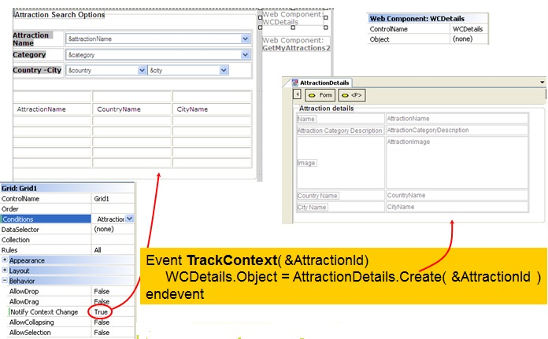

What do we understand by context? When we talk about Context, we mean the context of our application in a form. When we move inside a screen, we're changing the context of attributes and variables. This information about context changes is essential to create an intent-oriented interface. Our approach enables you to trigger events and take actions depending on the context information of our application (the place where the cursor is positioned). This is why we say that the User Interface (UI) is context-sensitive, giving more power to the final applications. Suppose that the application consists of several web components which make up the webform. You can easily trigger an event in one of the web components as soon as the end user changes his/her context information in another component (changes the focus to a control, or selects a grid line). Basically, the web controls that you want to track changes on "subscribe" to an event which listens to the context changes of any other control. By programming a TrackContext event, to allow the programmer to retrieve the context information and take the desired actions. 

SyntaxEvent TrackContext (parameters) Where: Event_code The parameters can only be variables. DescriptionThe event is qualified by the parameters it receives; that is: you can have any number of TrackContext Events in your source code, that are differentiated by the parameters they receive. Scope
See alsoContext Sensitive User Interfaces
|
| Backlinks | ||
| Events in Transactions | Toc:GeneXus - Table of contents | Web Panels events |